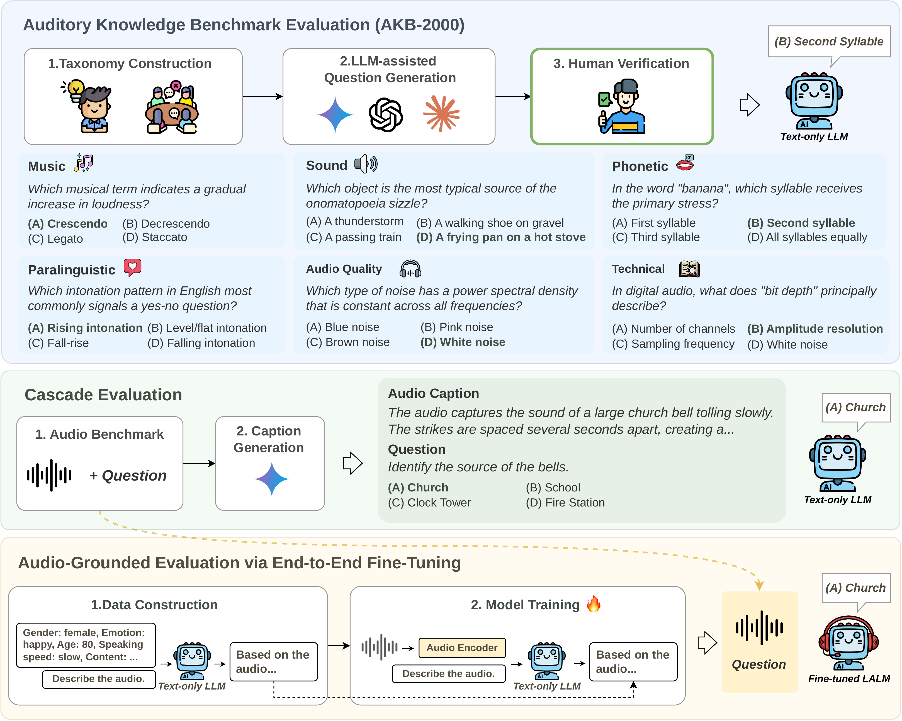
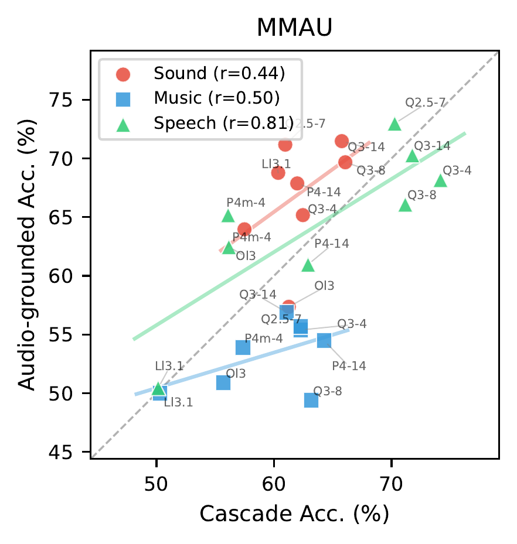
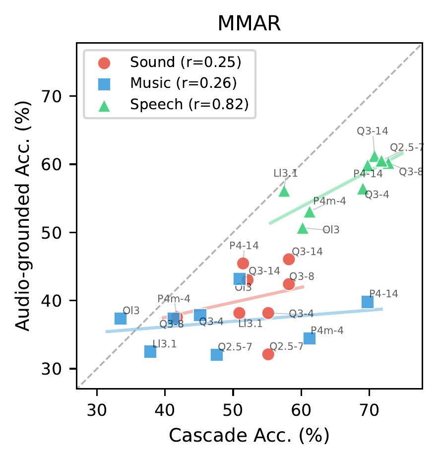

Large language models (LLMs) have been widely used as knowledge backbones of Large Audio Language Models (LALMs), yet how much auditory knowledge they encode through text-only pre-training and how this affects downstream performance remains unclear. We study this gap by comparing different LLMs under two text-only and one audio-grounded setting: (1) direct probing on AKB-2000, a curated benchmark testing the breadth and depth of auditory knowledge; (2) cascade evaluation, where LLMs reason over text descriptions from an audio captioner; and (3) audio-grounded evaluation, where each LLM is fine-tuned into a Large Audio Language Model (LALM) with an audio encoder. Our findings reveal that auditory knowledge varies substantially across families, and text-only results are strongly correlated with audio performance. Our work provides empirical grounding for a comprehensive understanding of LLMs in audio research.
Three complementary evaluations to investigate auditory knowledge in LLMs

Figure 1. Overview of the three evaluations. (Top) AKB-2000 construction: a two-level taxonomy guides LLM-assisted question generation, followed by human verification. (Middle) Cascade evaluation: a captioner converts audio to text descriptions fed to a text-only LLM. (Bottom) Audio-grounded evaluation: each LLM is fine-tuned into a LALM using the DeSTA self-distillation framework.
Auditory knowledge varies substantially across LLM families. Backbone selection alone causes >10% absolute difference in LALM performance. Qwen consistently outperforms Llama across all settings.
Text-only benchmark results are strongly correlated with audio-grounded performance (r=0.71–0.82), making them a lightweight proxy for LLM selection before expensive multimodal training.
LLMs systematically struggle with phonological tasks (rhyme, stress, pronunciation). The 5 hardest subcategories all involve reasoning about how words sound when spoken aloud.
A simple captioner + LLM cascade pipeline can match or surpass state-of-the-art end-to-end LALMs, suggesting current systems underutilize the LLM backbone's reasoning capability.
Comprehensive evaluation of 12 open-weight and 5 proprietary LLMs across three settings
| Model | AKB-2000(Text) | Cascade (Text) | Audio-Grounded(Audio-text) | ||
|---|---|---|---|---|---|
| MMAU(T) | MMAR(T) | MMAU(A) | MMAR(A) | ||
| Proprietary LLMs(Text) | |||||
| Gemini-2.5-Pro | 96.05 | 70.9 | 71.8 | — | — |
| Claude-Sonnet-4.5 | 95.70 | 70.8 | 70.5 | — | — |
| GPT-5 | 94.35 | 71.9 | 69.8 | — | — |
| GPT-4o | 92.90 | 69.3 | 66.0 | — | — |
| Gemini-2.0-Flash | 91.85 | 69.6 | 64.4 | — | — |
| Published LALMs (Audio-Grounded) | |||||
| Audio Flamingo 3 | — | — | — | 73.30 | 58.60 |
| Gemini-2.5-Pro (Audio) | — | — | — | 71.60 | 74.70 |
| Qwen2.5-Omni | — | — | — | 71.50 | 56.70 |
| DeSTA2.5-Audio | — | — | — | 66.00 | 50.80 |
| Phi-4-mm | — | — | — | 65.70 | 40.20 |
| Open-weight LLMs — Qwen | |||||
| Qwen3-14B | 85.05 | 66.2 | 64.3 | 66.20 | 52.90 |
| Qwen3-8B | 78.95 | 66.8 | 62.0 | 61.70 | 53.00 |
| Qwen3-4B | 82.00 | 66.3 | 61.0 | 62.90 | 49.20 |
| Qwen2.5-7B | 80.70 | 64.5 | 61.4 | 66.60 | 47.30 |
| Open-weight LLMs — Phi | |||||
| Phi-4-14B | 86.35 | 62.9 | 62.6 | 61.10 | 52.50 |
| Phi-4-mini-4B | 70.00 | 56.1 | 54.4 | 61.00 | 44.20 |
| Open-weight LLMs — Llama | |||||
| Llama-3-8B | 73.45 | 53.5 | 54.4 | — | — |
| Llama-3.1-8B | 68.10 | 53.6 | 51.6 | 56.40 | 47.70 |
| Llama-2-7B | 45.90 | 43.2 | 47.1 | — | — |
| Open-weight LLMs — OLMo | |||||
| OLMo-3-7B | 69.05 | 57.7 | 53.2 | 56.90 | 44.90 |
| OLMo-3-7B-DPO | 67.30 | 58.0 | 52.4 | — | — |
| OLMo-3-7B-SFT | 63.95 | 57.3 | 51.6 | — | — |
Accuracy (%) across all evaluation settings. Shading indicates relative ranking among open-weight models (darker = higher). — indicates model was not evaluated in that setting.
| Model | Avg. | Sound | Paralin. | Phonetic | Music | Quality | Technical |
|---|---|---|---|---|---|---|---|
| Proprietary LLMs | |||||||
| Gemini-2.5-Pro | 96.05 | 96.37 | 96.46 | 94.93 | 95.76 | 97.45 | 95.35 |
| Claude-Sonnet-4.5 | 95.70 | 95.16 | 96.97 | 91.71 | 96.01 | 95.41 | 96.22 |
| GPT-5 | 94.35 | 95.16 | 94.44 | 93.55 | 95.51 | 94.90 | 92.44 |
| GPT-4o | 92.90 | 95.97 | 93.94 | 90.32 | 95.01 | 93.88 | 87.50 |
| Gemini-2.0-Flash | 91.85 | 93.15 | 92.42 | 88.94 | 92.77 | 94.39 | 89.24 |
| Open-weight LLMs | |||||||
| Phi-4-14B | 86.35 | 89.92 | 88.22 | 79.26 | 89.53 | 85.71 | 81.69 |
| Qwen3-14B | 85.05 | 90.73 | 85.35 | 76.96 | 88.78 | 88.27 | 79.36 |
| Qwen3-4B | 82.00 | 85.48 | 85.35 | 69.59 | 86.78 | 85.71 | 73.84 |
| Qwen2.5-7B | 80.70 | 87.10 | 81.99 | 69.12 | 87.28 | 81.63 | 72.97 |
| Qwen3-8B | 78.95 | 82.66 | 79.80 | 68.20 | 85.04 | 82.65 | 72.38 |
| Llama-3-8B | 73.45 | 79.44 | 74.58 | 55.76 | 81.55 | 81.63 | 64.24 |
| Phi-4-mini-4B | 70.00 | 75.00 | 71.04 | 56.22 | 75.56 | 71.94 | 65.70 |
| OLMo-3-7B | 69.05 | 73.39 | 71.21 | 57.60 | 75.56 | 75.51 | 58.14 |
| Llama-3.1-8B | 68.10 | 73.39 | 69.53 | 58.53 | 75.56 | 72.96 | 56.40 |
| OLMo-3-7B-DPO | 67.30 | 71.37 | 70.03 | 55.76 | 75.81 | 71.43 | 54.65 |
| OLMo-3-7B-SFT | 63.95 | 65.32 | 64.48 | 51.61 | 72.07 | 68.37 | 57.85 |
| Llama-2-7B | 45.90 | 51.61 | 44.61 | 39.17 | 52.62 | 44.90 | 40.99 |
Table 1. AKB-2000 evaluation accuracy (%) across six categories.
| Model | MMAU (Text) | MMAR (Text) | ||||||
|---|---|---|---|---|---|---|---|---|
| Avg. | Sound | Music | Speech | Avg. | Sound | Music | Speech | |
| Captioner Comparison (LLM: Gemini-2.5-Pro) | ||||||||
| Official Baselines | 57.3 | 57.35 | 49.70 | 64.86 | 50.7 | 46.1 | 40.3 | 60.9 |
| Whisper-large-v3 | 61.7 | 52.55 | 53.59 | 78.98 | 61.6 | 41.21 | 44.66 | 77.55 |
| Omni-captioner | 68.9 | 69.97 | 61.08 | 75.68 | 65.5 | 51.52 | 46.12 | 77.21 |
| Gemini-caption | 70.9 | 68.77 | 66.47 | 77.48 | 71.8 | 64.85 | 49.03 | 81.97 |
| Gemini-caption + Proprietary LLM | ||||||||
| GPT-5 | 71.9 | 72.97 | 66.47 | 76.28 | 69.8 | 66.06 | 47.09 | 80.27 |
| Gemini-2.5-Pro | 70.9 | 68.77 | 66.47 | 77.48 | 71.8 | 64.85 | 49.03 | 81.97 |
| Claude-Sonnet-4.5 | 70.8 | 68.47 | 63.77 | 80.18 | 70.5 | 60.61 | 50.49 | 81.29 |
| Gemini-2.0-Flash | 69.6 | 68.47 | 63.77 | 76.58 | 64.4 | 58.18 | 47.09 | 75.85 |
| GPT-4o | 69.3 | 66.37 | 64.07 | 77.48 | 66.0 | 61.21 | 49.03 | 73.47 |
| Gemini-caption + Open-weight LLM | ||||||||
| Qwen3-8B | 66.8 | 66.07 | 63.17 | 71.17 | 62.0 | 58.18 | 41.26 | 72.79 |
| Qwen3-4B | 66.3 | 62.46 | 62.28 | 74.17 | 61.0 | 55.15 | 45.15 | 69.05 |
| Qwen3-14B | 66.2 | 65.77 | 61.08 | 71.77 | 64.3 | 58.18 | 50.97 | 70.75 |
| Qwen2.5-7B | 64.5 | 60.96 | 62.28 | 70.27 | 61.4 | 55.15 | 47.57 | 71.77 |
| Phi-4-14B | 62.9 | 62.46 | 61.98 | 64.26 | 62.6 | 58.18 | 51.46 | 69.73 |
| OLMo-3-7B-DPO | 58.0 | 58.86 | 56.29 | 58.86 | 52.4 | 50.30 | 33.50 | 59.18 |
| OLMo-3-7B | 57.7 | 61.26 | 55.69 | 56.16 | 53.2 | 52.12 | 33.50 | 60.20 |
| OLMo-3-7B-SFT | 57.3 | 59.16 | 55.99 | 56.76 | 51.6 | 46.67 | 39.32 | 54.42 |
| Phi-4-mini-4B | 56.1 | 53.45 | 57.49 | 57.36 | 54.4 | 52.73 | 41.75 | 61.22 |
| Llama-3.1-8B | 53.6 | 60.36 | 50.30 | 50.15 | 51.6 | 50.91 | 37.86 | 57.48 |
| Llama-3-8B | 53.5 | 51.65 | 52.40 | 56.46 | 54.4 | 53.33 | 42.72 | 59.18 |
| Llama-2-7B | 43.2 | 46.55 | 46.71 | 36.34 | 47.1 | 50.30 | 33.01 | 50.68 |
Table 2. Cascade evaluation on MMAU and MMAR (%).
| Model | MMAU (Audio) | MMAR (Audio) |
|---|---|---|
| Published Systems | ||
| Gemini-2.5-Pro (Audio) | 71.60 | 74.70 |
| Audio Flamingo 3 | 73.30 | 58.60 |
| Qwen2.5-Omni | 71.50 | 56.70 |
| DeSTA2.5-Audio | 66.00 | 50.80 |
| Phi-4-mm | 65.70 | 40.20 |
| Fine-tuned LALM (Ours) | ||
| Qwen2.5-7B | 66.60 | 47.30 |
| Qwen3-14B | 66.20 | 52.90 |
| Qwen3-4B | 62.90 | 49.20 |
| Qwen3-8B | 61.70 | 53.00 |
| Phi-4-14B | 61.10 | 52.50 |
| Phi-4-mini-4B | 61.00 | 44.20 |
| OLMo-3-7B | 56.90 | 44.90 |
| Llama-3.1-8B | 56.40 | 47.70 |
Table 3. Audio-grounded performance (%). Upper block: published LALM systems; lower block: our fine-tuned LALMs with DeSTA framework.


Figure 3. Category-level scatter plots comparing cascade and audio-grounded accuracy for 8 fine-tuned LALMs.